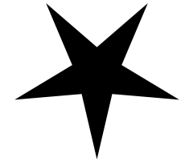

{kind=link}
«Когда ж падучая звезда По небу тёмному летела И рассыпалася»- тогда В смятенье Таня торопилась, Пока звезда ещё катилась Гаданье сердца ей шепнуть». А. С. Пушкин
 1. З В Е З Д А
{kind=link}
Круговоротом вечным звёзд и их таинственным мерцаньем питался издавна народ, судьбу пытая за гаданьем. И суеверный гений грёз, поэт, испытанный страданьем, в поверья лепту свою внёс, признав небес существованье. Друзья мои, примите дар — венок сонетов и сомненье, что испытал в броске Икар, умом поправший притяженье… Терзаньем душ, как сонмом кар, Земли отмечено движенье.
{kind=link}
2. К О З Е Р О Г (22 декабря — 20 января)
Земли отмечено движенье перемещеньем звёздных сфер и душ небесное стремленье несло земные мифы вверх. Так некогда за Зевсово кормленье коза Амальтея, презревши смерть, мир звездный озарила появленьем, дав подражанию пример. Под знаком Козерога и Сатурна в мир входят стойкие до слез, упорные в стремлении натуры, цель жизни для которых — рост. Напоминает замкнутость фигуры Зимой наскучивший мороз.
{kind=link}
3. В О Д О Л Е Й (21 января — 18 февраля)
Зимой наскучивший мороз венчает ночью звёздный Лев, а от разливов, вешних гроз берет названье Водолей. В свеченьи слабом его звёзд — Неясносгь жизненных ролей: Сатурн несёт раздумий гроздь, Уран — жизнь делает полней. В противоречьях этих вечных кипит фантазий впечатленье, ум ясный, чувством человечным во всё приносит оживленье. Так землю ото снов беспечных Весны готовит пробужденье.
{kind=link}
4. Р Ы Б Ы (19 Февраля — 20 марта)
Весны готовит пробужденье движенье Солнца к звёздам Рыб. Предание гласит, что их явленье Евфрат давно в себе хранит. чудовище Тифон с остервененьем Венеру и Амура гнал средь глыб, они в Евфрате скрылись от гоненья и превратились в звёздных рыб. С тех пор под этим знаком приходят к нам из мира грёз интуитивные натуры, но, однако, уму тот редкий дар принёс Нептун за ощущеньем страха И за капелью первой слез.
{kind=link}
5. О В Е Н (21 марта — 20 апреля)
И за капелью первой слёз ушёл за Солнце малый Овен — бараний рог неярких звезд день равноденствия готовит. Среди проснувшихся берёз, срывая зимние оковы, идёт весной людей прирост, труд для которых — все основы. Характер сильный и отважный, страдает часто нетерпеньем, достигнув цели он однажды к ней испытает охлажденье, но их увидев скажет каждый Тепло идёт, как наводненье.
{kind=link}
6. Т Е Л Е Ц (21 апреля — 21 мая)
Тепло идет, как наводненье, когда от Зевса в образе Тельца Земля за Солнцем прячет от гоненья Европу — дочь Финикийского царя. Рождённые в те дни не ведают сомненья, наследуют достоинства отца, упрямы в принятых решеньях, дела доводят до логичного конца. Их мелкие капризы и упрямство порою стоят горьких слез, но не подменят они пьянством, Венерою дарованных им грёз, их мир откроет вам пространство, С ним шёпот листьев, плач берёз.
{kind=link}
7. Б Л И З Н Е Ц Ы (22 мая — 21 июня)
С ним шёпот листьев, плач берёз, с ним тёплый воздух, как натура, души взволнованной до слез любовью братьев Диоскуров. Они блистают среди звёзд Полукс и Кастор — две фигуры, Зевс их за подвиги вознёс а под крылом хранит — Меркурий. Раздвоенность присуща всем, кто появился под их сенью, но дар их интересен тем, что он питается сомненьем, неуловимость черт и схем Любви приносит наважденье.
{kind=link}
8. Р А К (22. июня — 22 июля)
Любви приносит наважденье дыханье летнего тепла, за ним к зиме идёт движенье, как раки пятятся тела. Луны таинственной явленье, созвездья Рака темнота сопровождают появленье мечтам открытого ума. Характер скрытный, словно тень бежит от праздничного света, трагедию создать ему не лень из пустякового предмета, он лето любит за сирень, Но гаснет вспыхнувшее лето.
{kind=link}
9. Л Е В (23 Июля — 23 августа)
Но гаснет вспыхнувшее лето и Солнце входит в клетку Льва, под знаком солнечного света живёт прекрасная пора. Кто в эти дни явился свету добр на прекрасные дела, не верит в страшные приметы, не бросит на ветер слова. И лишь тщеславие гордыни, бестактность слабого чутья приносят промахи судьбине, но он встречает их шутя. Любовь в нём никогда не стынет, Сгорая в пламени огня.
{kind=link}
10. Д Е В А (24 августа — 23 сентября)
Сгорая в пламени огня, затмило Солнце звёзды Девы, под покровительством Меркурия земля родит людей учёных, но несмелых. Когда дочь Зевса и Фемиды — Астрея, царица века золотого усмотрела как опошлилась ей подвластная семья, она в созвездье Девы улетела. Беззлобность не таит в себе обиды и Дева любит Землю беззаветно, шлёт к ней из Спики Виргиниды, но чувства остаются без ответа, в тоске жжёт листья дочь Фемиды И осень украшает многоцветьем.
{kind=link}
11. В Е С Ы (24 сентября — 23 октября)
И осень украшает многоцветьем не только Землю, но и тех на ней, кто появился под Весов созвездьем с Венерианской щедростью страстей. Мир наблюдений славен многолетьем на картах звёздных позабытых дней, заметив дня и ночи равновесье, поставил знак весов халдей. Всё взвешено под этим знаком, ясно характер, ум, любовь, дела, но в переделках судьб напрасно искать поддержки, равенство деля, их взгляд так выразят прекрасно… Леса угасшие, поля.
{kind=link}
12. С К О Р П И О Н (24 октября — 22 ноября)
Леса угасшие, поля напомнят миф о том, как Скорпионом, тенью зла, был ранен Орион. С тех пор зимою никогда не виден Скорпион, уполз напуганный тогда в созвездья лета он. Жестокий и могучий тип определяют две планеты, он часто сам себя жалит, в любви не требует ответа и лишь задумчиво твердит: Короче день, всё меньше света…
{kind=link}
13. С Т Р Е Л Е Ц (2Зноября — 21 декабря)
Короче день, всё меньше света, Кентавр стреляет в Скорпиона, Юпитер — главная планета в созданьи солнечного фона, Земля живёт в его тенетах, рождая страстные персоны, Стрельцом раздвоенного цвета: одни в бегах всегда, как кони, авантюристы приключений, к недостижимому стремясь, ни в чем не ведают сомнений. Другие — в разум удалясь, решают средь каких явлений Спирали круг прошла Земля.
{kind=link}
14. С О Л Н Ц Е
Спирали круг прошла Земля и Солнце, проходя по зодиаку, звёзд излученье принимая на себя, Земле передавало их характер. Кто знает так ли связана семья созвездий видимых нам знаков, но тайных сил заметная статья, венчает с звездами нас тактом. И пусть неверны предсказанья — тяжёл наследственности воз, но, каждый ощутил влиянье на жизнь свою Вселенских поз и судьбы осветил гаданьем, Круговоротом вечным звёзд.
{kind=link}
15. З Е М Л Я
Круговоротом вечным звёзд Земли отмечено движенье — Зимой наскучивший мороз, Весны готовит пробужденье И за капелью первой слёз Тепло идёт, как наводненье, С ним шёпот листьев, плач берёз Любви приносит наважденье. Но гаснет вспыхнувшее лето, Сгорая в пламени огня, И осень украшает многоцветьем Леса угасшие, поля. Короче день, всё меньше света — Спирали круг прошла Земля.
Опубликован в книге: «Дыханье искренней души». Стихи и венок сонетов. — Николаев: Атолл, 2001. 88стр.